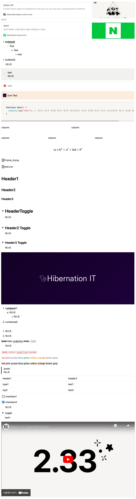

2023년 10월 14일
Notion2Component
React
NextJS
TypeScript
노션에서 제공하는 @notionhq/client를 사용하여 React 또는 NextJS에서 노션 페이지를 렌더링 할 수 있게 만들어주는 라이브러리입니다.
노션 객체를 이용하여 쉽게 사용할 수 있습니다.
지원하지 않는 블록이 존재하니, 깃허브에서 잘 확인해주세요
하지만 지금 만든 라이브러리는 Notion API 의 서버가 느리면 페이지 로드 또한 같이 느려지기 때문에 이를 해결하기 위해 조금 더 연구해보려 합니다.
모듈 사용하기
실제 노션 페이지
렌더된 노션 페이지 보기
